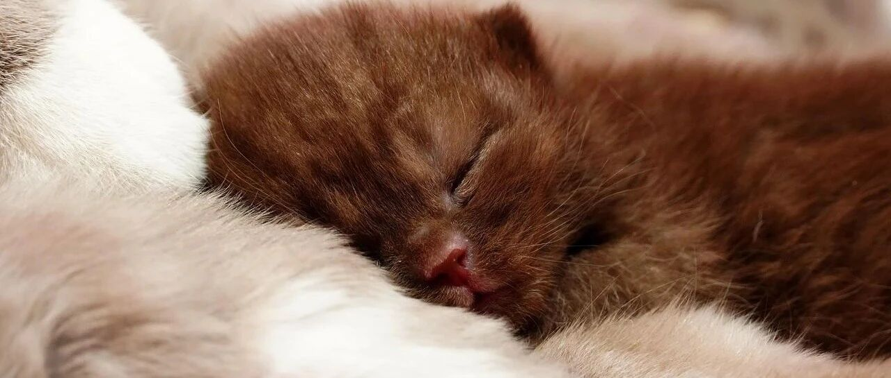

普通人搞定“睡后收入”的3条路。
点击关注 秋秋在分享
一起实现财务自由退休
大家好，我是秋秋呀！
大老王问了我一个问题：想财富自由，开发自己的产品重要？还是存钱吃利息重要？
那今天我就分享下，普通人“睡后收入”的三条路。
有表格有细节，还有真实经验分享！像我这么认真分享「财务自由」知识的博主，是不多了🙊
一、靠利息
也是大家知道的，我最初想存300万，4%的年利息，每个月1万生活费养活自己。
吃利息这种，就是投入时间低，风险也低。

那肯定有人说！现在大额存单利息可没有4%了！
铁粉知道，我还配置了债券基金和银行股吃股息，置顶文章都写过。
也就是靠利息，这些方法都可以：

1. 银行存单
方式：定期存款、大额存单。
优点：国有银行几乎零风险，流动性较好。
缺点：当前利率低（1%-3%），收益有限。
适合人群：保守，懒人。
2. 国债/国债逆回购
方式：通过证券账户购买。
优点：国家信用背书，风险极低。
缺点：流动性较差
适合人群：希望保本且有一定收益的。
3. 债券基金

是我现在配置比较多的。
方式：基金平台买入
优点：收益高于存款（3%-6%），门槛低（100元起投）。
缺点：短期可能有波动，我选的回撤2%左右的。
适合人群：能接受小幅波动又追求稳定收益的。
4.吃股息

B是我的买入点。
方式：港股通或基金平台买入。
优点：不仅有股息（每年3%～7%）还能赚取股票上涨收入。
缺点：波动大，新手难入门。
适合人群：能长期持有，对股票有研究，接受风险的。
二、靠产品
我为什么退休了还会写东西做视频？因为创作有很多好处！
1、源源不断的被动收入。
看看我靠产品的睡后收入：
1）公众号自带的流量收入，也就是你们看到的小广告，每天50-100。

2）发视频橱窗带货的收入

3）付费文章的被动收入。
写完一篇只要还有人看就有钱。

还有之前扶持博主的分红。
2、创作就是我的输出型的爱好，带给我快乐。
3、叔本华说过：研究哲学不是为了获得什么，而是远离灾祸。
我写东西也是，就算没有1和2的好处，也能避免我退休后大把时间养成不良爱好。
那靠产品怎么持续赚钱呢？它需要技能，前期投入时间高，长期收益也高。

1. 出产品
出书、在线课程、工具等。
优点：能一次创作，反复销售，利润高。
缺点：需要专业技能，前期投入时间长。
适合在特定领域有知识和特长的人。比如教人剪辑、录心理学课程。
我现在不执着于出书了，而是把付费文章当成自己的产品，大家阅读方便，我还有持续的被动收入。
2. 内容流量

运营公众号、抖音等，通过流量变现。
优点：流量积累后收益能一直增长。
缺点：竞争激烈。你必须得不停创作，让用户源源不断看到新内容。
适合那些有分享欲望，不觉得累，擅长内容输出的人（秋秋本人了）
我现在主要是文中广告流量费，有时候写出10万加阅读量文章，一篇收入能有上千块，也还不错。
3. 电商分发
之前我分享过我用闲鱼一键带货小赚一笔：
你也可以开设网店或自己橱窗带货。无需囤货没啥本金，缺点就是需选品能力和运营技巧，利润少。
适合那些能折腾，熟悉电商规则的人。
4. 知识产权类
大家知道真香表情包吗？

据说创作者因为这个表情包都财务自由了。
这种方式就是申请专利、版权，或收取授权费。优点能长期收益，无需持续投入。
缺点是：成功率低！
适合有艺术细胞的人。

有绘画能力的，可以开发各种微信表情包。
声音不错的做配音，都是不错的变现方式。
秋秋目前主要还是付费文章和流量带给我睡后收入。
这也是我利息的补充。我算了下，这些收入相当于100～200万本金的利息，还不用当乙方，挺好。
三、出租
可以把闲置房产、车位、设备等出租赚取收益。
我目前是没有。
不过大家问我怎么给父母养老？他们倒是有好几套房子，早早实现60后的财务自由。
这也是我只用利息养活自己的原因。
我家人属于自食其力互相帮衬，不需要任何一个人养活全家，大家都有各自的“睡后收入”。
最后，总结一个「睡后收入」大表格：

如果你问我先后顺序和难易程度，我想说能靠租房那是最好的！
但是考虑普通人，还是建议从基础的入手，从小钱去存，不断提升自己的能力。

靠利息和靠产品也是相辅相成，大家努努力就能实现的！